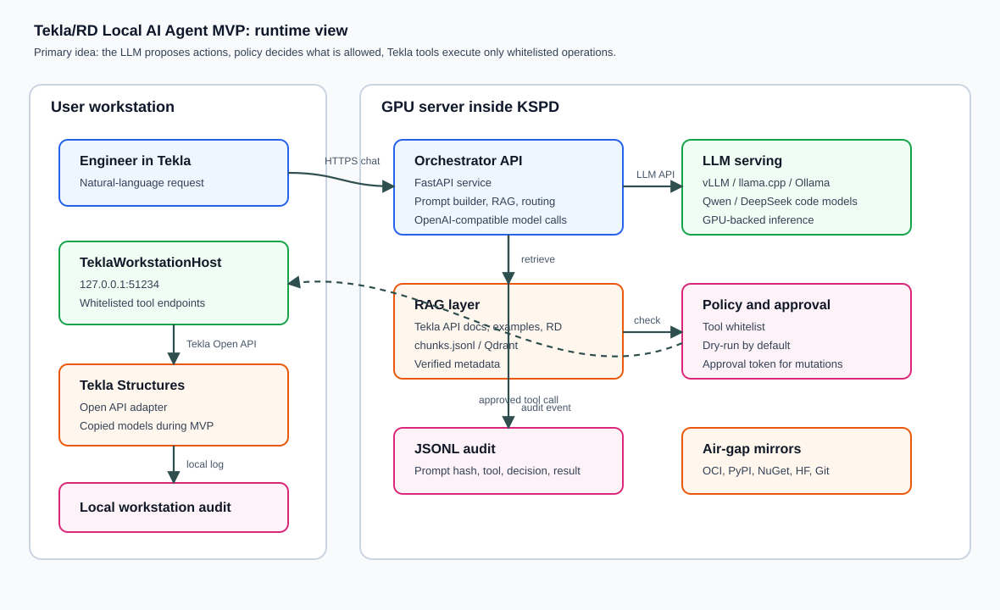

Архитектура решения
Эта страница объясняет, из каких частей состоит локальный ИИ-агент для Tekla/RD, как проходит пользовательский запрос, где находятся контрольные точки и почему MVP строится вокруг типизированных инструментов, а не вокруг свободного исполнения кода.
1. Общая схема

Агент разделен на серверную и клиентскую части. Серверная часть отвечает за диалог, работу с локальной моделью, поиск контекста и принятие решений по policy. Клиентская часть находится на рабочем месте пользователя и выполняет только те операции Tekla, которые явно реализованы как инструменты.
2. Компоненты и их назначение
| Компонент | Где находится | Зачем нужен | Что важно контролировать |
|---|---|---|---|
| Chat UI / внутренний портал | Рабочее место или корпоративный портал | Дает инженеру понятный интерфейс для запроса: “создать”, “проверить”, “объяснить”, “подготовить черновик”. | Идентификация пользователя, отображение dry-run, явное подтверждение действий. |
| Orchestrator API | GPU-сервер | Собирает prompt, вызывает RAG, обращается к LLM, проверяет tool calls и пишет audit. | Ошибки модели, политику tools, журналирование, таймауты, версию prompt. |
| Local LLM server | GPU-сервер | Запускает локальную модель кода/инструкций без обращения во внешние API. | Версию модели, формат весов, лицензию, использование GPU, скорость ответа. |
| RAG corpus | GPU-сервер или внутреннее хранилище | Дает модели знания по Tekla Open API, внутренним C# примерам, шаблонам РД и правилам. | Статус проверки источников, актуальность, исключение устаревших и запрещенных документов. |
| Tool policy | Orchestrator, конфиг `tools-policy.yaml` | Решает, можно ли выполнять инструмент, нужен ли approval и разрешена ли работа с production-моделью. | Deny-by-default, unit tests, запрет неизвестных инструментов. |
| TeklaWorkstationHost | Рабочее место пользователя | Локальный HTTP-host рядом с Tekla, который вызывает Tekla Open API через типизированные методы. | Bind на localhost, локальный audit, запрет mutating calls без approval header. |
| JSONL audit | Сервер и рабочее место | Фиксирует решения, tool calls, хеши аргументов, результаты, ошибки и approvals. | Полноту журнала, срок хранения, доступность для разбора инцидентов и пилота. |
3. Как проходит запрос

- Инженер формулирует задачу. Запрос может быть информационным, проверочным или связанным с изменением модели.
- Orchestrator ищет контекст. RAG подбирает релевантные фрагменты документации, примеров и внутренних правил.
- LLM формирует ответ или план tool call. Модель не исполняет код, а предлагает структурированное действие.
- Policy проверяет действие. Неизвестные инструменты блокируются. Mutating tools уходят в dry-run без approval.
- Workstation host выполняет разрешенное действие. Read-only tools можно запускать сразу; create/modify требуют подтверждения.
- Результат возвращается пользователю и попадает в audit. В ответе должны быть предупреждения, assumptions и следующий шаг.
4. Почему не начинаем с дообучения
RAG быстрее дает знания о предметной области
Для старта важнее дать модели справку по Tekla API, внутренние примеры и правила РД. Это можно проверить и обновить без тренировки весов.
Дообучение требует чистого корпуса
LoRA/QLoRA стоит запускать только после накопления проверенных примеров: запрос, контекст, корректный tool call или код, результат проверки.
| Подход | Когда использовать | Основной риск | Как снижать риск |
|---|---|---|---|
| RAG + tools | MVP и пилот | Неполный или устаревший контекст | Review источников, eval set, статусы `verified/deprecated/blocked`. |
| Генерация C# в sandbox | Исследовательский контур, не production | Некорректный или опасный код | Компиляция, статические проверки, тестовые модели, ручная приемка. |
| LoRA/QLoRA | После baseline и чистого корпуса | Обучение на ошибках, деградация качества | Verified SFT dataset, контрольная выборка, сравнение base/RAG/LoRA. |
5. Минимальный набор tool calls для MVP
| Инструмент | Тип | Назначение | Ограничение MVP |
|---|---|---|---|
GetSelection |
Read-only | Прочитать выбранные объекты Tekla и вернуть свойства. | Разрешен без approval. |
QueryObjects |
Read-only | Найти объекты по типу, имени, профилю или материалу. | Ограничить объем выдачи и не возвращать лишние данные. |
ValidateModel |
Read-only | Проверить модель или выбранный набор объектов по заданным правилам. | Сначала только диагностические проверки. |
CreateBeam, CreateColumn, CreateRebar |
Create | Создать новые элементы по параметрам. | Dry-run без approval, выполнение только на копиях моделей. |
ModifyObject |
Modify | Изменить свойства или геометрию существующего объекта. | Только после отдельной приемки сценария и подтверждения инженера. |
6. Что должно быть готово перед пилотом
Технически
- Orchestrator развернут и пишет audit.
- Локальная модель отвечает через внутренний endpoint.
- RAG индексируется из проверенных источников.
- Workstation host работает на тестовом рабочем месте.
Процессно
- Назначены владельцы сценариев и приемки.
- Определены копии моделей для пилота.
- Есть канал поддержки и журнал дефектов.
- Пользователи понимают dry-run и approval.
Контрольно
- Unknown tools блокируются.
- Mutating tools требуют approval.
- Production writes отключены.
- Все tool attempts попадают в audit.